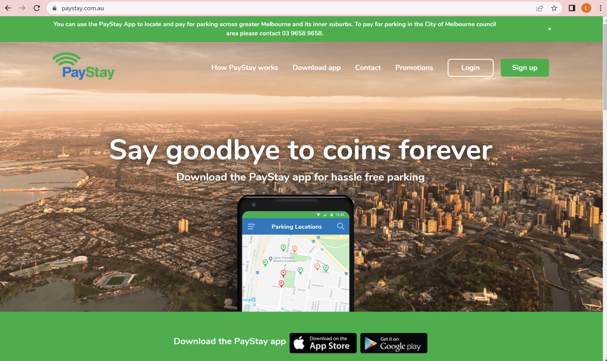
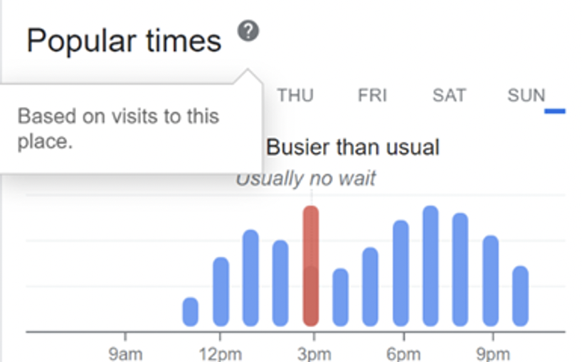

Project idea
Topic
In our project we want to create and streamline peoples use of parking at train stations. We are doing this by creating an application that blends elements of the PTV app with their implemented scheduling systems for seeing when trains are coming and going but adding a new element of finding available parking at all train stations across the Melbourne’s metro system. Additionally, we are allowing users to book parking spaces ahead of time, strictly for long periods of time, allowing them to always be able to have a parking spot ready for them when they need to be. We have chosen to combine these as we believe that these two elements can greatly increase the ease of access towards the public transport system, but additionally increase the desire to use it as it addresses the main needs of the customer base we are targeting.
With our project we want to create a way for all people who use a blend of public transport and personal vehicles to always be able to have the ability to find parking for free. Thus, leading to a greener, more sustainable, lifestyle and carbon footprint. We want to incentivise people who may previously drive to work to only drive a small distance as we will be able to guarantee a parking spot for them upon arrival at the train station.
Motivation
Our initial motivation for pursuing this project came from one of our group members having difficulty in finding suitable parking at her local train station due to ongoing construction works. The surrounding parking of the train station she needed to use had limited parking times of 1-2 hours and therefore she attained a hefty fine. Additionally, she ended up being late for her university classes. Henceforth, inspiring this idea within her. Because of this, our primary motivation for our app is to create an easy to use, cost effective and efficient way to find available parking at train stations. Moreso, as the world’s interest in creating a greener earth grows, we aim to help further incentivise the use of public transport through making it accessible for those who must drive to their nearest station. Ultimately, we believe and are heavily motivated in providing an easier, greener experience for all people who both drive and use public transport.
Landscape
For our project, we have identified one major competitor that currently offers a similar service to what we want to offer. This competitor is the app ‘PayStay’ which offers easy payment for parking options within the city. While this app does have similar features to what we plan to implement. ‘PayStay’ acts as a general parking app more focused on street parking and payment rather than parking in any one specific area or venue. While the payment and booking options would be similar to how we plan to implement it in our app, our primary difference and main focus point would be the parking for train stations specifically which I believe will give us an edge for users that may specifically use ‘PayStay’ for parking near stations already. Additionally, we have identified no apps that incorporate an aspect of public transport timetables into a parking app, which aims to be one of our key features in our app. Furthermore, No apps were found that did not focus on car parking areas that were free, instead they incentivised on the payable parking spots, where our application would prioritise the former.
Detailed Description
Aims
Main Aim for the Carparks Victoria Application
Our main priority for this project is to better the lives of users of the public transport system. In collaborating with Public Transport Victoria and indeed the government, our goal is to alleviate issues that may occur when trying to ‘Park and Ride’. Our project aims to do this by creating a fully functional Application that can display to its users in an aesthetically pleasing and simple way, the availability of car spots at train stations. Our main aim is to create a way for users to easily see the availability of free car parks within the train stations car park. This will allow commuters to easily see which train station is closest to them as well as if they will be able to park and ride there free of charge, or if they will need to go to an alternative station. Additionally, it will save them money, as traditional car park apps only show the availability of pay-per-hour or fixed rate car parking spots in their surrounding areas.
Smaller Goals Aiding our Aim
Key: HP = High Priority LP = Low Priority
Login Page (HP):
The login page would be the initial page all users would see when they open the app for the first time. Its function is to allow the user to create a profile that will attain all their bookings, their preferences, favourite train stations, customisable app features such as darkmode and much more. The Login page is one of our high priority features as it is the first page that the user would see and therefore makes up the basis of our application. It is required to store all the apps customisable features that the user chooses as well as allow them to create bookings, save their information, such as credit card details, email address, preferred car park spot, length of parking and how long it takes them to get to work to make use of a quick booking system for the user.
Startup Page (LP):
The startup or loading page is essentially the page that users will see once they have logged in. It enables the app to save the users login details and not have to have them login every time they open the app. It has a very low priority due to its functionality not being very useful. However, it does add to the overall aesthetic of the application, as well as saving the user time.
Home Page (HP):
The home page is the initial page that users will view after logging in. It features a friendly ‘welcome back message’ to the user; the time, date and simple weather details; a navigation bar at the bottom; a favourites section allowing the user to quickly click from a list of their favourite train stations to view its information; quick search functionality with a choice of train line, availability of car spots, and a ‘near you’ section, aiding the user in searching for train station car parks near them. We considered this page as a high priority, as it sets out the rest of the application on multiple levels, including aesthetic, ease of use and helpfulness. If a user gets defeated using the first main page of the application they are going to immediately click out of it. As outlined in Jakob Nielsen’s 10 Heuristics ‘flexibility of use’ - that allows for a design that is functionable for both experts and novice users.
Navigation Bar (HP):
The navigation bar at the bottom of the screen quickly brings the users to five different areas of the app. The Home button, that will bring the users back to the initial front page from every other page. A search button that allows users to easily search nearby train stations and their car park availability. A maps button that will bring users directly to the map, outlining the nearest train stations and their parking. A news button that will direct the user to any construction work or anything relevant to their favourite and nearby train stations, and finally a settings page that outlines user preferences, about the application, seek help and many other features. The navigation bar is extremely important as it is featured all throughout the application. Again, referring to Nielsen’s Heuristic of ‘User Control and Freedom’ it gives the user options, say if they make a mistake, it gives them that option to go back. Additionally, they can quickly get to a certain area / functionality of the app if need be.
Map Function / Feature (LP):
The map function would be a ‘map’ interface that can be changed based on the user’s preference with pinpoint locations marking the nearest train stations and their car parks. It would be used by allowing the user to pinch and scroll (similarly to how they use any maps app) and would see icons of nearby train stations.
This would include the ability to show one’s own location; see the address’ of the car parks of their choosing; be redirected to their map app of choice which will then grant them the ability to get directions from their location to the end destination and provide an estimate of how long it will take to get there and the easiest route.
However, the map function is not possible for us to implement on our application as we would like to add both google maps and apple maps functionality to the application. Unfortunately for apple maps we would need to register our business with them, which we do not have, also we are required to pay a licensing fee, which due to this being a university project, we do not have the funds for. We could implement the Google Maps feature however it would be very time consuming and would limit the amount of other features we could add to the app, henceforth we decided as a group to leave it out.
Busiest Times Graph (LP): 
The busiest Times Graph would show the users the peaks and troughs of the busiest times and when to best arrive at their preferred car park. It would be regularly updated and be based on visits to each location. (Similar to the ‘Popular Times’ Graph curated by Google inc.) Ours would include, the peak and lowest busyness of the location on the specific date, as well as the opening hours of the car park (if any) and if the location is busy at the user’s current time.
This Graph requires lots of data that officially we cannot obtain without implementing our application and having it being used over time, however if it could be successful it would follow a similar concept to that of Googles.
Car Booking Functionality (LP):
The Car Booking Functionality would allow users to reserve a spot ahead of time for a small, accessible fee that would be judged based on how long that individual plans to stay in their car spot. This would be helpful to users that attend the train station daily for example work commuters that require a spot daily. They would first choose their end destination (which train station they will be getting of at) and then have the option to choose if they would like to reserve the spot daily, monthly, or yearly; with the system estimating prices based on calculations of how long they would like to reserve the spot and the accessibility of the spot.
Again, the car booking system is unable to be completed as it would require hardware and software created by us and implemented at each train station's car spot that would only allow that specific person to obtain the car spot. This may include (but is not limited to) bollards that fall down once the correct number plate is scanned or sensed.
However, from an application perspective, we could create a ‘mock’ booking system allowing the user to choose their preferred dates, location and spot for extended periods of time.
Search Bar (HP):
The search bar would do as it says. To allow users to search any train stations and be met with the car park information and other useful information about that train station, including the next few trains leaving the station, the time graph and booking information. This is an essential part of our application as it is key to giving users the ability to customise the app to their needs and likings.
Journey Planner (LP):
The Journey Planner, similar to that of the already existing journey planner on the PTV app, allows users to construct their journey from their current destination (or destination of choice) to their desired end destination and see the route that they will take via public transport. Unfortunately, again, without this data this functionality of the app is difficult to create and hence we did not actually make it function how it should, but just created the user interface of selecting the destinations and the departure time.
Settings Page / Preference / Profile Page (LP):
This page is, as its name suggests, the admin side of the application. It would provide the user help if needed, will tell them about the application and its purpose, allow them to change their preferred train station, change their profile settings and so on. It has a low priority due to the requirement of the application thus far, and will not take much time to complete.
Our Overall hope for the application:
The Application would be available on all platforms. This would include an app for both Apple™ and Android making the app easily accessible for anyone on any device. The Interface colour palette would match that of the current PTV app; being grey, white and red. However, it would feature a more modernised and simple user interface that appeals to Jakob Nielsen’s 10 Heuristics. This would ensure both new and experienced users can easily pick up how to use the app for easy functionality and ease of use.
Examples of Nielson’s 10 Heuristics that we would use:
3. User Control and Freedom: This would ensure the app has many back buttons, ‘are you sure you want to’ buttons and other functions that will allow users to easily and efficiently get back to the last page they were looking at.
4. Consistency and Convention
6. Recognition over Recall: This requires us to use lots of symbols that are easily recognisable by the users, and requires them to use as little brain power as possible. If the user needs to think at every step of the process, they may be frustrated with the application, in turn neglecting it.
7. Flexibility of use: This heuristic is vital to us, as it ensures that we create a program that is easy for both novice and experienced users to easily navigate their way through the application, regardless of the last time they opened the app. This would require us to not make any language too sophisticated, ensure they are not overloaded with information and that irrelevant information is not included.
8. Aesthetics and Minimal Design: Much like the current PTV Application and the majority of the Public Transport Victoria’s logos, our project would follow a simple, minimal layout that allows both existing and new users to not feel overwhelmed.
This is only a selection of the that we chose to talk about and would always opt to ensure we keep in mind all 10 of Nielsen's Heuristic when creating our application.